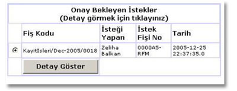
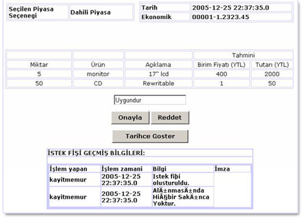

Destek birimlerinde doldurulup destek birimi satýn alma sorumlusunun onayýndan geçen istek fiþleri destek birimi müdürünün onayýna gelir. Destek birimi müdürü sisteme giriþ yaptýðýnda destek birimi müdür sayfasý ile karþýlaþýr. Bu sayfada sol tarafta kullanýcý haklarýnýn yer aldýðý bir menu sað tarafda ise onay için bekleyen istek fiþleri yer alýr. Bu istek fiþleri doldurulma tarihlerine göre sýralanýr. Birim müdürü ayrýntýlarýný görmek istediði istek fiþini seçer ve "Detay göster" tuþuna basarak yeni bir sayfaya yönlendirilir.

Açýlan sayfanýn üst kýsmýnda seçilen piyasa, fiþin doldurulduðu tarih, istek fiþinin kodu ve istek fiþinin ekonomik kodu bulunur. Sayfanýn orta kýsmýnda ise istek fiþine girilen ürünler hakkýnda bilgiler yer alýr. Bunlar sýrasýyla ürün miktarý, ürünün ne olduðu, ürün hakkýnda kýsa açýklama, ürünün tahmini birim ve toplam fiyatýdýr. Sayfanýn en alt bölümünde ise destek birimi müdürünün istek fiþi ile ilgili yorum yazabileceði bir alan, bu alanýn altýnda ise "Onayla", "Reddet" ve "Tarihçe Göster" tuþlarý yer almaktadýr. Kiþi eðer "Tarihçe Göster" tuþuna týklarsa sayfanýn aþaðý tarafýnda istek fiþinin ilk doldurulduðu andan itibaren kimlerin onayýndan veya reddinden geçtiðini, bu iþlemler sýrasýnda ne tür yorumlar yazýldýðýný görebilir.
Bu aþamadan sonra istek fiþi üzerinde iki iþlem gerçekleþtirilebilir.
 Onayla
Onayla
Reddet
Onaylanan fiþler bütçeye gönderilir onay için gönderilir, reddedilen fiþler ise destek birimi satýn alma sorumlusuna tekrar gönderilir.

Destek birimi müdürü ekranýn solundaki menude bulunan aþaðýdaki iþlemleride gerçekleþtirebilir.
Ana Menü
Ana menu ye donmek için kullanýlýr.
Þifre deðiþtir
Kullanýcý þifresi deðiþtirmek için kullanýlýr. Bu iþlemin ayrýntýlarý
için "Þifre deðiþtirme" bölümüne bakýnýz.
Sistemden Çýkýþ
Sistemden çýkmak için kullanýlýr.